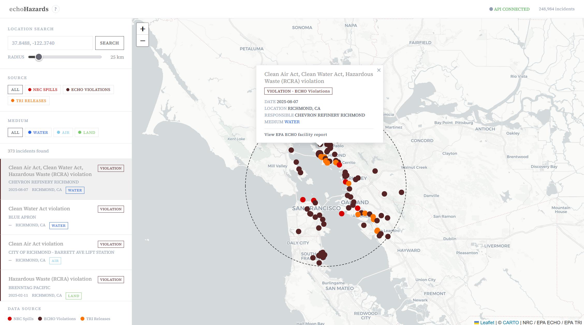

echoHazards | Python / FastAPI / PostGIS

A data pipeline and API that consolidates environmental incident data
and serves geospatial proximity queries.
This project is a response to the obfuscation of important public data. The government is required to publish data about spills, violations, and chemical releases, but the data lives in separate systems with different shapes. If you want to understand what has been reported near a specific place — a watershed, a neighborhood, a facility — you end up hunting across a huge number of sources instead of searching by location.
The pipeline ingests public incident records, maps them into a single incident model, and keeps the full original record alongside the normalized fields so nothing from the source is discarded when formats do not line up. As this data is often the most useful to understand within a geographic context, the API and frontend are designed to support proximity searches with the goal of incorporating filters for date range, facility type, and more.
This project is a response to the obfuscation of important public data. The government is required to publish data about spills, violations, and chemical releases, but the data lives in separate systems with different shapes. If you want to understand what has been reported near a specific place — a watershed, a neighborhood, a facility — you end up hunting across a huge number of sources instead of searching by location.
The pipeline ingests public incident records, maps them into a single incident model, and keeps the full original record alongside the normalized fields so nothing from the source is discarded when formats do not line up. As this data is often the most useful to understand within a geographic context, the API and frontend are designed to support proximity searches with the goal of incorporating filters for date range, facility type, and more.
Here is a link to the github repo
and the live deployment.